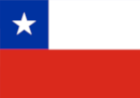

Panel de Datos EArte ALyC
A partir de las tesis de maestrías y doctorados disponibles en las bases de datos de los países integrantes de EArte ALyC, presentamos algunos datos generales, tales como la cantidad de trabajos ya catalogados, su distribución temporal, el nivel del programa de posgrado (maestría o doctorado), los contextos educativos y el tipo de financiamiento de la universidad o institución, distinguiendo entre públicas y privadas. Destacamos que los datos no representan la cantidad total de tesis de los países, sino solamente aquellas producciones que ya han sido catalogadas, ya que se trata de un proceso continuo de identificación y análisis. La fecha de actualización hace referencia a la última fecha en que los datos de los países fueron agregados a la página web.
Cantidad de tesis catalogadas
 Argentina
Argentina
 Brasil
Brasil

ChileEArte ALyC
Actualización: (abr./2026) Colombia
Colombia
 Cuba
Cuba
 México
México
Distribuición temporal
Nivel del Programa del Posgrado
Contextos educacionales/educativos del trabajo de tesis
Tipo de financiamiento de la Universidad/Institución de Educación Superior